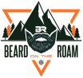
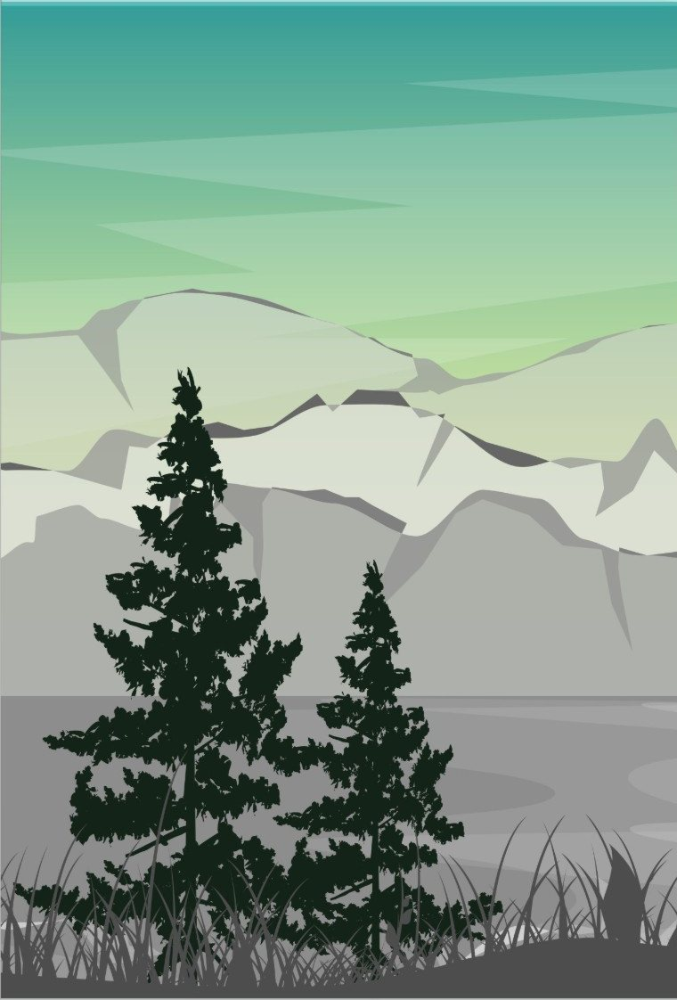
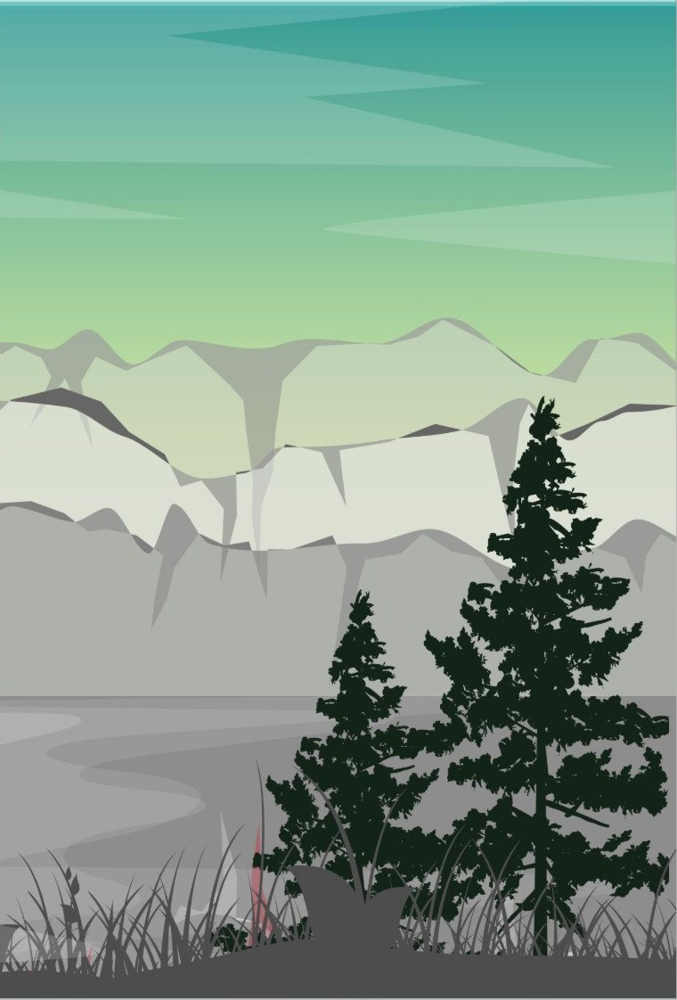

Tag / 01
Off Road
Trail runs, forest roads, and the stuff that goes wrong on them. Line choice, airing down, recovery, and honest takes on gear that actually earned its spot.
Field Channel // Off Road + Fishing
Dirt roads, cold water, and a camp chair at the end of it. Beard on the Roam is a running record of trails driven, fish caught (and missed), and every wrong turn that turned out right.

Section 01
No studio. No script. A truck, a rod, and whatever the weather decides to do.
Section 02
Latest drops from the channel. New episodes land here as they go live.
Section 03

Section 04
A kid who grew up chasing creeks, now a grown man doing the same thing with a camera.
Beard on the Roam started with a simple itch: get back to the trails, the water, and the adventures that made being a kid great. Then bring everybody along for the ride.
Get Lost is the motto and the project. Pick a road you haven't taken, follow it until the pavement quits, and see what's at the end.
Read the full storySection 05
The channels are getting rebuilt from the ground up. Links go live here first.
